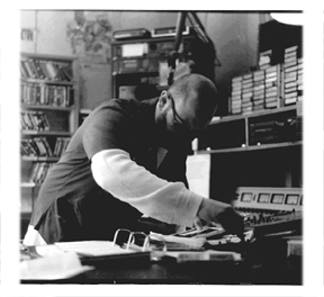

|
 |
"get the fucking mailman on the air." |
|
I'm a student in the English department at Duke...What I do as a graduate student at
Duke is study medieval literature - particularly I study heresy right now as it pertains
to orthodox minded writers, or sort of writers who don't care but noticed heresy going
on. And how it affected their work and how these writers drew upon the resources of
sort of the claims about the relationship between language and truth which were made
by these heretics. As far as hobbies are concerned, it seems to me that most of my
activities have been with reading and writing. It's hard for me to differentiate my
professional life/vocation from my advocation, hobbies and stuff like that. So when I
pick up a book and start reading it, and I do so on a Friday night, I don't do it because
it's work I have to do but because its something Iíd rather be doing. The other hobby
would be that I play in a band with Roger [another DJ]. hatari is the name there...Roger
and Jason are fascinated with music that has a kind of progressive but avant-garde rock
twist to it. I donít know how else to describe it because the category itself is so
unstable...so I drum for that, which is interesting because Iím not really a drummer...I
learned on my own, sort of stumbling along, finally I picked it up and now Iím very
happy with it. So thatís what's going on.
I started there as a DJ last summer and was very interested in what it was about but not really sure what it was. But I think as the year has gone by and it becomes my first year there, moving from a sub to a regular DJ, I am really interested in it and Iím sort of ready to raise my experience there and what I get from it to a new level. What I originally wanted to do was have access to equipment and to the potential to make noise on the radio...Me being a drummer in this band, was kind of a fulfillment of a wish that Iíve always had since I was in high school, to play drums and that's being fulfilled now. The other one was to have access to a lot of equipment and to go out and record sounds and stuff and produce a sort of noise kind of stuff that I was really influenced by in Cincinnati...A guy had this show called ìArt Damageî in Cincinnati, which was on a station called WAIF and he did a wonderful production thing and it impressed me very much. So when I moved here, I decided one of the things I wanted to do was radio, radio, radio...and I just started thinking that there's this opportunity to go for something and Iím tired of wishing, you know, that I was more involved and sort of mourning stuff that could have been if I had stayed in Cincinnati...It was all those things coming together to lead me to say, yeah, Iíll apply to this thing, to XDU and see what happens...Originally I thought I wanted to have like a talk segment of some sort about art and aesthetics and politics and sort of have people talk about these things. I still love to talk about that, when I meet the DJís who do the things that I admire. Like Ian Rothwell for instance does a night show, he does the noise stuff - you sort of do it on your own or if you want to take a break you play a record that has that already. It's kind of a mix of two things. He does a good job because he feeds the PR room into the MCR, that has two things going on, and he uses the expanse of the PR, you know the sort of feedback potential that sort of happens within the finite space of, what, 8 feet by 12, bouncing back and just sort of feeds it in and has it as another line. And I just think that's really interesting....So when I heard his thing, show, on the air, I drove up to the station - I always do this, whenever I hear something that I really like, I go to the station. I don't like to call, I like to go there and see immediately what it is. So I was driving and I went to the station and he had just like 4 things going on at once and he was manipulating stuff and I thought it was really great...Sometimes what Iím wondering now, as opposed to my earlier tendencies to want to talk about aesthetics, I actually feel like I donít want to talk about anything, I donít even want my voice to be heard on the radio sometimes, or going out over the air...What basically Iím looking for is people who want to talk about the stuff Iím interested in, and I think I can find them at the station. And then I want to be able to sort of produce the stuff which will fulfill, ultimately. I did apply to the station deeming it with a certain degree of respect, which largely came from that which I don't know. Now, I deem the station with a kind of respect cause I see it as potential...My radio is always fixed to XDU or XYC cause that's the stuff I usually want to hear, all the shows, everything's usually satisfactory - except this morning I heard somebody backcelling Pearl Jam and I thought "What the fuck is that all about?" I hear that occasionally...I can only be a part time person cause Iím so busy with this other shit that I do. I would want to be like - I do heresy, like stuff that these people wrote and published was censored, and burned...We had these censorship problems - but I just wanted to get some people together and pull out all of the Pearl Jam and stuff from the station. I mean how could you not notice? You're making the job too easy for corporate aesthetics as it were to kind of get over more independent music. But I never had that thought when I first heard the station, because I didn't listen as closely. I listened passively, as most people do. You know, the biggest fans at XDU, for better or for worse, are its own workers. Now I listen to it all the time, to learn stuff. So as you can see, what Iíve shown you here is a double-sided thing. There's so much that Iíve learned, you know, not only from the playlist, but from other people who are there and it's been a great place for that. There have been significant moments when Iím driving in my car late and thinking "That's cool, Iím glad you're playing this right now cause itís significant to my experience and you're helping me." You know the affective response you have to music. |
I mean, what is the point? Is it the final product? Are we to assess the station by assuming the stance of a listener that we want to motivate aesthetically or ideologically towards a certain kind of...aesthetic principle?...Like how many people are doing specialty shows? How many people with real knowledge of the stuff are adding to the station?...My views on the notion of the DJ - Iím less and less sure of it. I really don't have any ideas on how to understand ìnormal,î like I do enjoy, Iím a sucker for that shit...I love to rock out, I like stuff like that...It's not a question of enjoyment, itís a question of understanding, wondering. I want something that I can understand now. I want some other part of my brain to be tickled. Or I want my understanding to become now synthesized with the notion of enjoyment, you can't have these things separate. It certainly I think beats anything that I can hear in this range, in North Carolina. I would have to say that itís pretty good...I think college radio is having to go through some kind of a struggle now that most of its, not necessarily music, but much of its cultural, political, ideological positioning (I always speak in these terms) has been coopted by corporations. You know, what was alternative is now no longer alternative...When I reflect back at the college stations, I think WXDU is doing a largely successful job. I mean my ideal would be for there to be a collection of specialty shows. But then that would rob the project of public service announcements. I mean you need a community, it has to be a community thing...It could be limiting if you started repeating. I mean, there's only a finite amount of experts you can have...If it was felt to be limiting, Iíd want it to be rejected immediately...It's just this struggle I have between bureaucracy and independent freedom, which are both notions that the station sort of has to grapple with...The community station WAIF is a little bit different...When it was on the air, it was always weird people...and they would come on and just blow your fucking mind away with this shit. And then they would be off the air and you could never get it, so it was unreliable. Keeping on the air is an important thing, which I think XDU does. Iím really troubled by [XDU's fit at Duke]. I really think it's a horrible fit...It is Duke funded, it's strangely Duke funded, cause it's in the Duke Union not Duke direct- like "this is our station." So there's kind of, it's a yes and no Duke thing...Iíll be short with this just to say, my problem with Duke is that people's notion of community is Duke, itís not Durham. Anything at Duke that is so in turn with itself that does not realize that itís dealing with Durham really pisses me off. Since XDU is autonomous also from corporate rock, it should also be autonomous from naive notions of community that have gone around the Duke community about what Durham is. Given that we have this sort of split proportions as you say, it makes me think, okay, here's good place for this outreach to go on. That there's a part of Duke that is drawing from the community and is interested in community voices in music. You couldnít have urban shows that strong with the kids who are at Duke. There's just no way, they're not from that position, that place. Iím very modernist about my assumptions of what art should do...It's there to make you think and once you start thinking, then you start entering a process where things are enjoyable. And it's a process of falling in and situating yourself to an intelligibility...In other words, the station doesnít play what people want to hear, because I think it takes work to listen to it, to some forms of jazz, to some forms of noise, to some forms of indierock, to some kinds of world music particularly...In my view there's some kind of phobia in our culture about listening to, our sort of social differences among people and communities sort of falls along the line of aesthetics...I know that there are people there that understand XDU. Iím always impressed by people. I just don't know if it should be for everybody who goes to Duke and itís obviously open to anyone who wants to use it. But I just don't know if it needs to do anything more. I mean, if it's a matter of money and justifying its existence, I would justify its existence on principle just to say that because it's not like the campus "hot thing," that means its working. You can listen to the urban shows, and listen to the DJís that freestyle rap, the backbeat - that's integrating with the community. Itís spontaneous aesthetic production between somebody in East Durham calling into the station and there's a connection. I mean, integration into the community. How is it referenced, how is it sort of substantiated? We have a 70-20 split. That's another reference. The fact that we do PSAíSís, you know, is another point...In Dante's Paradise Regained...Jesus has these radical politics of doing nothing; that is, that his inner disposition is his political stance. And what I simply mean by that illustration is that the fact that if you just look at the station as is and just put it into a moment of stasis, I think the way of the DJís tells you there's just this community involvement. Why is it necessary? Well, there are no other radio stations in Durham...I get so sick of Chapel Hill sometimes...and I don't want Chapel Hill to be...is WXYC a community station? Ask the question, is Chapel Hill a community in that sense? ...That is a different thing. Community's always relative to like, community of students, community of morons...Iím so glad Iím in Durham. Itís necessary because there's nothing like WXDU around here...Durham is an organic community, Chapel Hill is an artificial one. That's why XDU is necessary because it's fortunate enough to be situated in such a community, but the burden is also on it to rise to the occasion to represent it fairly...I think it's necessary that there be 50 and 20. You know, get some people who, - get the fucking mailman on the air. It's necessary in that sense. Cause this is a city to represent as it were. |